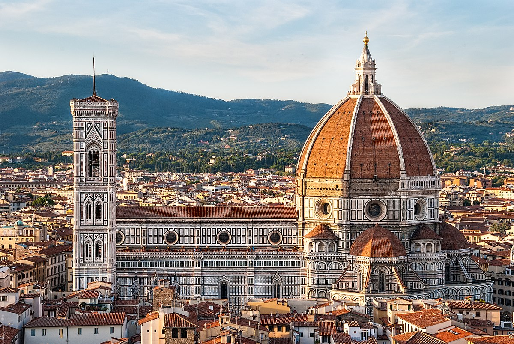
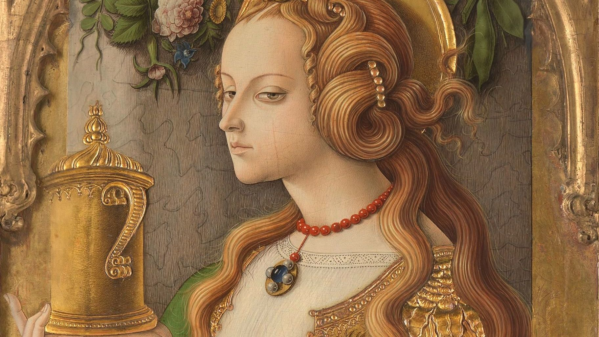
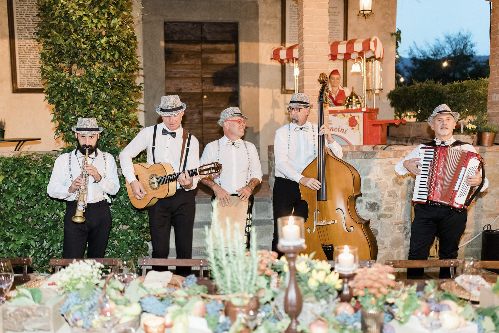
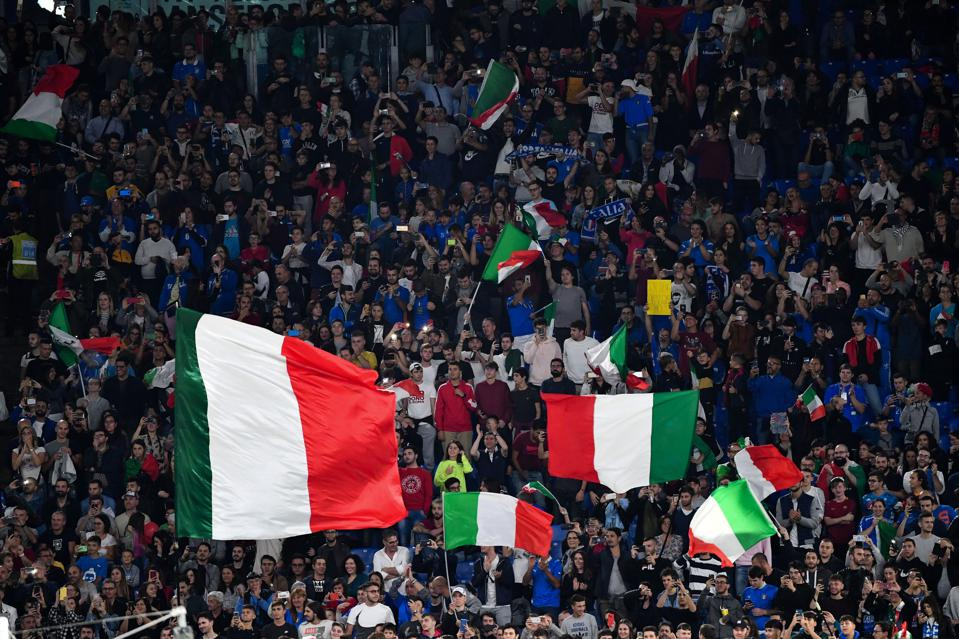
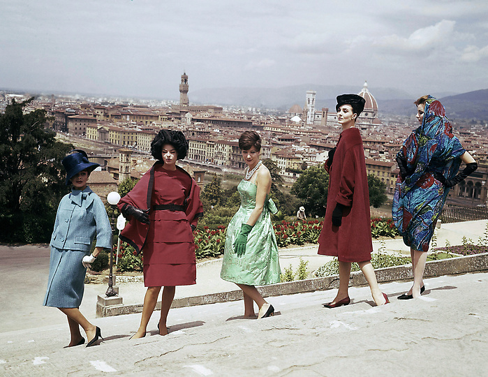
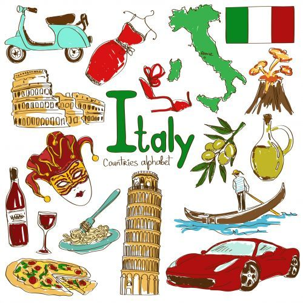
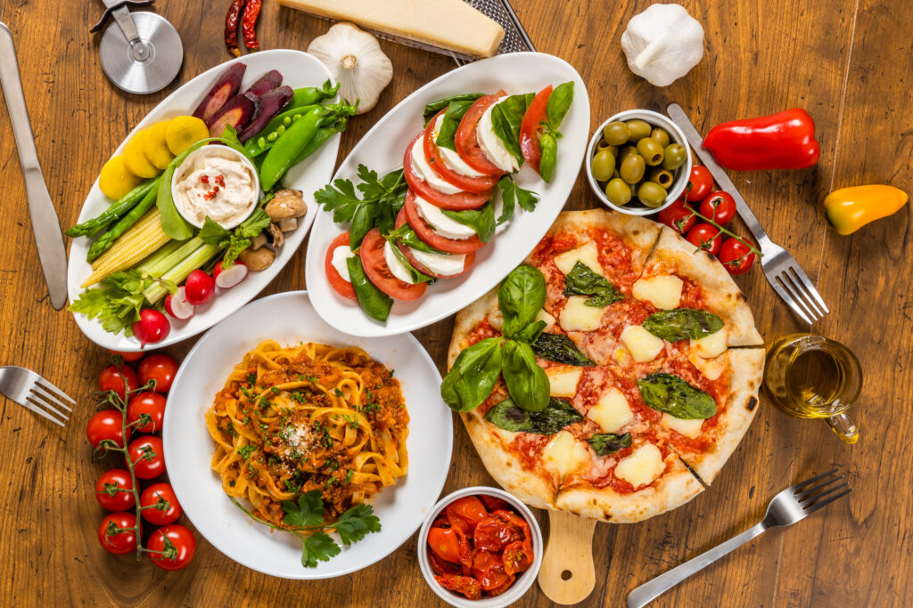

Divizată politic și geografic de secole până la unificarea din 1861, Italia și-a dezvoltat o cultura unică, modelată de o multitudine de obiceiuri regionale și de centre locale de putere și patronaj. În Evul Mediu și în Renaștere, mai multe curți concurau pentru atragerea celor mai buni arhitecți, artiști și cărturari, producând astfel un imens patrimoniu de monumente, picturi, muzică și literatură.
Italia are mai multe situri în patrimoniul mondial UNESCO (51) decât orice altă țară din lume, și are bogate colecții de artă, cultură și literatură din multe perioade diferite. Țara a avut o influență culturală foarte largă pe plan mondial, și datorită numeroșilor italieni emigrați în alte țări. Mai mult, în toată țara se află circa 100.000 de monumente de orice fel (muzee, palate, clădiri, statui, biserici, galerii de artă, vile, fântâni arteziene, case istorice și situri arheologice).
Arhitectură
Italia are un stil arhitectonic foarte larg și divers, ce nu poate fi clasificat doar după perioadă, ci și după regiune, având în vedere divizarea Italiei în mai multe state regionale până la 1861. Aceasta a creat o diversitate și un eclectism a designului arhitectural.

Italia este cunoscută pentru considerabilele realizări din arhitectură, cum ar fi construcția de arcuri, domuri și structuri similare în Roma Antică, fondarea mișcării renascentiste în arhitectură între sfârșitul secolului al XIV-lea și secolul al XVI-lea, a cărei origini îi este atribuită lui Filippo Brunelleschi. Este țara de origine a palladianismului(en), un stil de construcții care a inspirat mișcări cum ar fi arhitectura neoclasică(en), și a influențat stilul în care nobilii și-au construit conacele de la țară în toată lumea, în special în Regatul Unit, Australia și SUA între sfârșitul secolului al XVII-lea și începutul secolului al XX-lea. În Italia se găsesc unele dintre cele mai spectaculoase opere de arhitectură din Occident, cum ar fi Colosseumul, Bazilica Sfântul Petru din Roma, catedrala din Milano, catedrala din Florența, turnul înclinat din Pisa și clădirile din Veneția. Arhitectura italiană a influențat în mare măsură arhitectura mondială. Arhitectul britanic Inigo Jones(en), inspirat de designul clădirilor și orașelor italiene, a readus ideile arhitecturii renascentiste italiene în Anglia secolului al XVII-lea, inspirat fiind de Andrea Palladio. În plus, un stil inspirat din cel italian, modelat în special pe arhitectura Renașterii, a fost popular în Statele Unite în secolul al XIX-lea.
Artele vizuale
Istoria artelor vizuale italiene face parte din istoria picturii occidentale. Arta romană a fost influențată de Grecia și poate fi considerată în parte o succesoare a picturii antice grecești. Pictura romană are însă și unele caracteristici unice și importante. Singurele picturi romane care s-au păstrat până astăzi sunt picturi murale, multe găsite în vilele din Campania, în Italia sudică. Aceste picturi pot fi grupate în 4 „stiluri” sau perioade principale și multe conțin primele exemple de trompe-l'œil, pseudo-perspectivă și peisaj pur.

Pictura pe lemn a devenit mai frecventă în perioada romanescă, sub influența icoanelor bizantine. Către mijlocul secolului al XIII-lea, arta medievală și pictura gotică au devenit mai realiste, apărând și interesul pentru ilustrarea volumului și perspective în Italia cu Cimabue și discipolul său Giotto. Ei sunt considerați a fi cei mai mari doi maeștri ai picturii în cultura occidentală.
Mulți afirmă că Renașterea Italiană a fost epoca de aur a sculpturii, întinsă de-a lungul perioadei dintre secolul al XIV-lea și jumătatea secolului al XVII-lea, cu o importantă influență în afara granițelor Italiei moderne. În Italia, artiști ca Paolo Uccello, Fra Angelico, Masaccio, Piero della Francesca, Andrea Mantegna, Filippo Lippi, Giorgione, Tintoretto, Sandro Botticelli, Leonardo da Vinci, Michelangelo Buonarroti, Rafael, Giovanni Bellini și Titian au dus pictura la un nivel superior prin utilizarea perspectivei, prin studiul anatomiei umane și proporțiilor, și prin dezvoltarea unui rafinament fără precedent al tehnicilor de desen și pictură. Michelangelo a fost un sculptor activ între 1500 și 1520, și între marile sale capodopere se numără David, Pietà, Moise. Alți sculptori renascentiști au fost Lorenzo Ghiberti, Luca Della Robbia, Donatello, Filippo Brunelleschi, Andrea del Verrocchio.
În secolele al XV-lea și al XVI-lea, Renașterea Înaltă(en) a adus o artă stilizată denumită manierism. În locul compozițiilor echilibrate și al abordării raționale a perspectivei, care caracterizau arta de la începutul secolului al XVI-lea, manieriștii căutau instabilitate, artificiu și îndoială. Chipurile și gestica imperturbabile ale lui Piero della Francesca și liniștitele Fecioare ale lui Rafael sunt înlocuite cu expresiile tulburi ale lui Pontormo și cu intensitatea emoțională a lui El Greco. În secolul al XVII-lea, între cei mai mari pictori ai barocului italian(en) se numără Caravaggio, Annibale Carracci, Artemisia Gentileschi, Mattia Preti, Carlo Saraceni și Bartolomeo Manfredi. Ulterior, în secolul al XVIII-lea, rococoul italian(en) a fost inspirat în principal de rococoul francez, Franța fiind țara fondatoare a acestui stil particular, cu artiști ca Giovanni Battista Tiepolo și Canaletto. Sculptura neoclasică italiană, prin nudurile lui Antonio Canova, s-a concentrat pe aspectul idealist al mișcării.
În secolul al XIX-lea, marii pictori romantici italieni erau Francesco Hayez, Giuseppe Bezzuoli și Francesco Podesti. Impresionismul a fost adus în Italia din Franța de către Macchiaioli(en), în frunte cu Giovanni Fattori, și Giovanni Boldini; realismul — de Gioacchino Toma și Giuseppe Pellizza da Volpedo. În secolul al XX-lea, cu futurismul, în principal reprezentat de operele lui Umberto Boccioni și Giacomo Balla, Italia a redevenit epicentru al evoluției artistice în pictură și sculptură. Futurismului i-au urmat picturile metafizice ale lui Giorgio de Chirico, care a exercitat o puternică influență asupra suprarealiștilor și generațiilor de artiști ce le-au urmat.
Literatură și teatru
Baza limbii italiene moderne a fost stabilită de poetul florentin Dante Alighieri, a cărui operă de căpătâi, Divina Comedie, este considerată a fi între cele mai de seamă manifeste literare produse în Europa în Evul Mediu. În Italia de astăzi au trăit numeroase personalități ale literaturii universale: Giovanni Boccaccio, Giacomo Leopardi, Alessandro Manzoni, Torquato Tasso, Ludovico Ariosto și Francesco Petrarca, al căror vehicul de exprimare cel mai binecunoscut, sonetul, a fost creat în Italia.
Între filosofii de marcă se numără Giordano Bruno, Marsilio Ficino, Niccolò Machiavelli și Giambattista Vico. Romanul lui Carlo Collodi din 1883, Aventurile lui Pinocchio, este cea mai cunoscută operă literară clasică pentru copii scrisă de un autor italian. Figurile literare moderne, laureați ai Premiului Nobel pentru Literatură sunt poetul naționalist Giosuè Carducci în 1906, scriitoarea realistă Grazia Deledda în 1926, dramaturgul modern Luigi Pirandello în 1936, poeții Salvatore Quasimodo în 1959 și Eugenio Montale în 1975, satiristul și dramaturgul Dario Fo în 1997.
Teatrul italian își trage originile din tradiția romană, la rândul său puternic influențată de cea grecească; ca și multe alte genuri literare, dramaturgia romană a tins să adapteze și să traducă din cea grecească. De exemplu, Phaedra lui Seneca s-a bazat pe cea a lui Euripide, și multe dintre comediile lui Plaut erau traduceri directe ale operelor lui Menandru. Din secolul al XVI-lea și până în cel al XVIII-lea, Commedia dell'arte a fost o formă de teatru de improvizație(en), încă interpretat și astăzi. Trupele ambulante de actori își amenajau o scenă în aer liber și țineau spectacole de jonglerie, acrobație și, cel mai adesea, de scenete amuzante pe baza unui repertoriu de personaje cunoscute, cu o acțiune vag definită, denumit canovaccio.
Muzica
De la muzica populară(en) la cea clasică, muzica a jucat mereu un rol important în cultura italiană. Instrumentele asociate muzicii clasice, între care pianul și vioara, au fost inventate în Italia, și multe dintre formele de artă muzicală, cum ar fi simfonia, concertul și sonata, își găsesc rădăcinile în inovațiile din muzica italiană a secolelor al XVI-lea–al XVII-lea.

Cei mai celebri compozitori din Italia sunt compozitorii renascentiști Palestrina și Monteverdi, compozitorii baroci Scarlatti, Corelli și Vivaldi, compozitorii clasici Paganini și Rossini, și compozitorii romantici Verdi și Puccini. Compozitori italieni moderni, ca Berio și Nono(en) s-au dovedit importanți în dezvoltarea muzicii experimentale și electronice. Deși tradiția muzicii clasice este încă puternica în Italia, după cum demonstrează numeroasele teatre de operă din țară, cum ar fi La Scala din Milano și San Carlo din Napoli, și interpreți ca pianistul Maurizio Pollini și tenorul Luciano Pavarotti, italienii apreciază și scena muzicii contemporane.
Italia este celebră ca loc de naștere al operei. Opera italiană(en) se crede că a apărut la începutul secolului al XVII-lea, în orașe italiene ca Mantova și Veneția. Ulterior, lucrări și piese compuse de compozitori italieni din secolele al XIX-lea și al XX-lea, ca Rossini, Bellini, Donizetti, Verdi și Puccini, sunt între cele mai celebre opere scrise vreodată și sunt astăzi interpretate în opere din toată lumea. Opera La Scala din Milano este și ea una dintre cele mai bune din lume. Între celebrii cântăreți italieni de operă se numără Enrico Caruso și Alessandro Bonci.
Introdus în anii 1920, jazzul a căpătat o bază deosebit de puternică în Italia, și a rămas popular în ciuda politicilor culturale xenofobe ale regimului fascist. Astăzi, cele mai notabile centre de muzică jazz din Italia sunt Milano, Roma și Sicilia. Ulterior, Italia a ajuns în avangarda rockului progresiv din anii 1970, prin formații ca PFM și Goblin(en). Italia a fost și o țară importantă în dezvoltarea muzicii disco și electronice, italo-disco, cunoscut pentru sunetul futuristic și utilizarea sintetizatoarelor și mașinilor de ritm, unul dintre cele mai vechi genuri de muzică dance electronică, dar și a formelor europene de disco alături de Euro disco(en) (care avea să influențeze alte genuri, ca Eurodance și Nu-disco).
Producători și compozitori ca Giorgio Moroder(en), laureat a trei Premii ale Academiei Americane de Film pentru muzica sa, au avut o influență importantă în dezvoltarea muzicii dance electronice. Astăzi, muzica pop italiană își ține anual principalul festival la Sanremo, sursă de inspirație pentru concursul de cântec Eurovision, și Festivalul a Două Lumi(en) la Spoleto. Cântăreți ca diva pop Mina, artistul clasic crossover Andrea Bocelli, laureata premiului Grammy Laura Pausini, și artistul de anvergură europeană Eros Ramazzotti au reputație internațională.
Cinematografia
Istoria cinematografiei italiene a început la câteva luni după ce frații Lumière începuseră proiecțiile de filme. Primul film italian avea câteva secunde și îl arăta pe Papa Leon al XIII-lea dând o binecuvântare către cameră. Industria italiană de film s-a născut între 1903 și 1908 cu trei companii: Società Italiana Cines, Ambrosio Film și Itala Film. Au urmat și alte companii în Milano și Napoli. În scurt timp, aceste prime companii au ajuns la o calitate rezonabilă a producțiilor, care au început să se vândă și în afara Italiei. Cinematografia a fost utilizată apoi de Benito Mussolini, care a înființat celebrul studio Cinecittà din Roma pentru producția de propagandă fascistă în preludiul celui de al Doilea Război Mondial.
După război, filmul italian a fost recunoscut pe plan mondial și a devenit produs de export până la începutul unui declin artistic în preajma anilor 1980. Regizori de film cunoscuți ai acestei perioade au fost Vittorio De Sica, Federico Fellini, Sergio Leone, Pier Paolo Pasolini, Luchino Visconti, Michelangelo Antonioni și Dario Argento. Între filmele produse de ei se numără și capodopere ale cinematografiei mondiale, ca La dolce vita; Cel bun, cel rău, cel urât și Hoții de biciclete. Între jumătatea anilor 1940 și începutul anilor 1950 a avut loc apogeul filmelor neorealiste, ce reflectau starea precară a Italiei postbelice.
Pe măsură ce țara și-a revenit și a devenit una bogată în anii 1950, a urmat o nouă formă de neorealism, denumită „neorealismul roz”, apărând și alte genuri de film, cum ar fi peplum și apoi western spaghetti, care au fost populare în deceniile anilor 1960 și 1970. Mai recent, scena italiană a dispărut din atenția cineaștilor la nivel mondial, deși a primit ocazional atenție, cu ocazia lansării unor filme ca La vita è bella în regia lui Roberto Benigni, Il postino cu Massimo Troisi și La grande bellezza regizat de Paolo Sorrentino.
Sport
Cel mai popular sport în Italia este, de departe, fotbalul. Echipa națională de fotbal a Italiei, poreclită Squadra Azzurra este una dintre cele mai de succes astfel de echipe, fiind de patru ori campioană mondială (1934, 1938, 1982 și 2006). Cluburile italiene au câștigat 27 de trofee europene, federația italiană fiind astfel cea mai titrată în fotbalul european, iar primul eșalon în întrecerea între cluburi, Serie A, se clasează pe locul 4 în Europa, întrecerile sale fiind urmărite în toată lumea.

Alte sporturi de echipă populare în Italia sunt voleiul, baschetul și rugby-ul. Echipele naționale masculină și feminină de volei s-a clasat adesea în primele patru din lume, iar liga este considerată una cele mai bune ligi din lume. Echipa națională de baschet a Italiei a obținut aurul la Eurobasket 1983 și EuroBasket 1999, precum și argintul la Olimpiada din 2004. Liga italiană este considerată a fi una dintre cele mai competitive din Europa. Rugby-ul are și el un nivel ridicat de popularitate, mai ales în nordul țării. Echipa națională concurează în Turneul celor Șase Națiuni, și participă regulat la Campionatul Mondial de Rugby. Conform clasamentului dat publicității de International Rugby Board la data de 6 iunie 2016, Italia se clasează pe locul al 14-lea la nivel mondial.
Italia are o lungă tradiție și în sporturile individuale. Ciclismul este un sport foarte cunoscut în țară. Italienii au câștigat Campionatele Mondiale(en) de mai multe ori decât cei din orice altă țară cu excepția Belgiei. Giro d'Italia este o celebră cursă ciclistă pe distanță lungă ținută în luna mai a fiecărui an, și constituie una dintre cele trei Mari Tururi Cicliste(en), alături de Tour de France și Vuelta a España, fiecare durând aproximativ trei săptămâni. Schiul alpin este și el un sport foarte răspândit în Italia, aici fiind mai multe stațiuni de sporturi de iarnă, destinații populare pe plan mondial pentru schiori. Schiorii italieni au obținut rezultate bune la Jocurile Olimpice de Iarnă, la Cupa Mondială FIS de Schi Alpin, și la Campionatele Mondiale(en). Tenisul are un public fidel în Italia, și în același timp este al patrulea cel mai practicat sport la nivel național. Mastersul de la Roma, inițiat în 1930, este unul dintre cele mai prestigioase turnee din lume. Tenismenii profesioniști italieni au câștigat Cupa Davis în 1976 și Fed Cup în 2006 și 2009. Sporturile cu motor sunt și ele deosebit de populare în Italia, această țară câștigând de departe cele mai multe mari premii de motociclism. Scuderia Ferrari este cea mai veche echipă de raliuri din lume, concurând din 1948, și cea mai titrată echipă de Formula 1 din istorie, cu 15 titluri mondiale la piloți și 16 la constructori.
Istoric, Italia a avut mult succes și la Jocurile Olimpice, luând parte la prima Olimpiadă modernă și la 47 de ediții din cele 48. Sportivii italieni au câștigat 522 de medalii la Jocurile Olimpice de Vară, și alte 106 la Jocurile Olimpice de Iarnă, având în total 628 de medalii, dintre care 235 de aur, ceea ce îi clasează pe locul cinci în istoria olimpică și pe locul șase la numărul de medalii. Țara a găzduit două Olimpiade de Iarnă (în 1956 și 2006) și una de Vară (în 1960) și concurează pentru organizarea Olimpiadei din 2024.
Modă și design
Moda italiană are o lungă tradiție și este considerată a fi una dintre cele mai importante din lume. Milano, Florența și Roma sunt principalele capitale ale modei italiene. Conform Top Global Fashion Capital Rankings 2013 realizat de Global Language Monitor(en), Roma s-a clasat pe locul șase în lume, iar Milano pe 12. Marile firme italiene de modă, cum ar fi de exemplu Gucci, Armani, Prada, Versace, Valentino, Dolce & Gabbana, Missoni, Fendi, Moschino, Max Mara, Trussardi și Ferragamo sunt considerate între cele mai reputate case de modă din lume. Revista de modă Vogue Italia este și ea una dintre cele mai prestigioase din lume.

Italia este între primele țări din lume la design, în special design interior, arhitectural, industrial și urban. Țara a dat lumi mai mulți designeri celebri de mobilier, cum ar fi Gio Ponti și Ettore Sottsass, iar expresii italiene ca „Bel Disegno” și „Linea Italiana” au intrat în vocabularul designului de mobilă. Exemple de electrocasnice și piese de mobilier italiene sunt mașinile de spălat și frigiderele Zanussi, canapelele „New Tone” de la Atrium, și bibliotecile post-moderne ale lui Ettore Sottsass, inspirate din cântecul lui Bob Dylan „Stuck Inside of Mobile with the Memphis Blues Again”.
Astăzi, Milano și Torino sunt liderii naționali în design arhitectural și industrial. Orașul Milano găzduiești Fiera Milano, cel mai mare târg european de design. Milano găzduiește și evenimente majore de design și arhitectură, cum ar fi Fuori Salone și Salone del Mobile(en), și aici au activat designerii Bruno Munari, Lucio Fontana, Enrico Castellani și Piero Manzoni.

Bucătăria
Bucătăria italiană modernă s-a dezvoltat prin secole de schimbări politice și sociale, rădăcinile ei(en) datând din secolul al IV-lea î.e.n. Bucătăria italiană în sine a primit puternice influențe străine, începând cu cele etruscă, grecească antică(en), continuând cu cea bizantină(en) și evreiască(en). Schimbări importante au intervenit odată cu descoperirea Lumii Noi și introducerea unor ingrediente de acolo, cum ar fi cartoful, tomatele, ardeiul gras și porumbul, astăzi toate elemente centrale dar introduse în cantități importante abia în secolul al XVIII-lea. Bucătăria italiană are drept importante caracteristici o mare diversitate regională, o abundență de gusturi diferite, și este una dintre cele mai populare din lume, cu mare influență peste hotare.

Dieta mediteraneană formează baza bucătăriei italiene, bogată în paste, pește, fructe și legume și caracterizată printr-o simplitate și varietate extreme, multe feluri de mâncare având doar între patru și opt ingrediente. Bucătarii italieni se bazează în principal pe calitatea ingredientelor și mai puțin pe tehnici elaborate de preparare. Rețetele și felurile de mâncare sunt adesea rezultate din tradiția locală și de familie, fiind mai rar creații ale unor maeștri culinari, astfel că multe rețete sunt ideale pentru gătitul în gospodărie, unul dintre principalele motive din spatele popularității explozive a bucătăriei italiene din America până în Asia.
Un factor important al succesului bucătăriei italiene este faptul că se bazeaza pe produse tradiționale; Italia are cele mai multe specialități tradiționale protejate conform legislației europene(en). Brânzeturile, salamurile și vinul italian sunt o mare parte a specificului culinar italian, multe mărci fiind produse de origine protejată și, alături de cafele (în special espresso) formează o parte foarte importantă a culturii gastronomice italiene. Deserturile au o lungă tradiție de unificare a aromelor locale, cum ar fi citricele, fisticul și migdalele cu brânzeturi dulci ca mascarpone și ricotta sau cu gusturi exotice cum ar fi cacao, vanilie și scorțișoară. Gelato, tiramisù și cassata se numără printre cele mai celebre deserturi și prăjituri italiene.